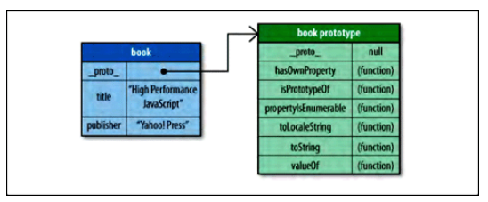

原型
JavaScript 中的对象是基于原形的。
原形是其他对象的基础，定义并实现了一个新对象所必须具有的成员。这一概念完全不同于传统面向对象编程中“类”的概念，它定义了创建新对象的过程。原形对象为所有给定类型的对象实例所共享，因此所有实例共享原形对象的成员。
一个对象通过一个内部属性绑定到它的原形（Firefox，Safari，和 Chrome 向开发人员开放这一属性，称作__proto__）。
因此，对象可以有两种类型的成员：实例成员（也称作“own”成员）和原形成员。
- 实例成员直接存在于实例自身
- 原形成员则从对象原形继承
参考例子：
var book = {
title: "High Performance JavaScript",
publisher: "Yahoo! Press"
};
alert(book.toString()); //"[object Object]"
下图为book对象和book对象继承的原型成员：

当 book.toString()被调用时，对成员进行名为“toString”的搜索，首先从对象实例开始，如果 book 没有名为 toString 的成员，那么就转向搜索原形对象，在那里发现了toString()方法并执行它。通过这种方法，booke 可以访问它的原形所拥有的每个属性或方法。
原型链
看一个例子：
function Book(title, publisher){
this.title = title;
this.publisher = publisher;
}
Book.prototype.sayTitle = function(){
alert(this.title);
};
var book1 = new Book("High Performance JavaScript", "Yahoo! Press");
var book2 = new Book("JavaScript: The Good Parts", "Yahoo! Press");
alert(book1 instanceof Book); //true
alert(book1 instanceof Object); //true
book1.sayTitle(); //"High Performance JavaScript"
alert(book1.toString()); //"[object Object]"
两个 Book 实例共享同一个原形链。 每个实例拥有自己的 title 和 publisher 属性，但其他成员均继承自原形。 当 book1.toString()被调用时，搜索工作必须深入原形链才能找到对象成员“toString”。
因此，深入原形链越深，搜索的速度就会越慢，效率越低。
Object.create()原型继承
Object.create方法可以用下面的代码代替。
Object.create = function (obj) {
function F() {}
F.prototype = obj;
return new F();
};